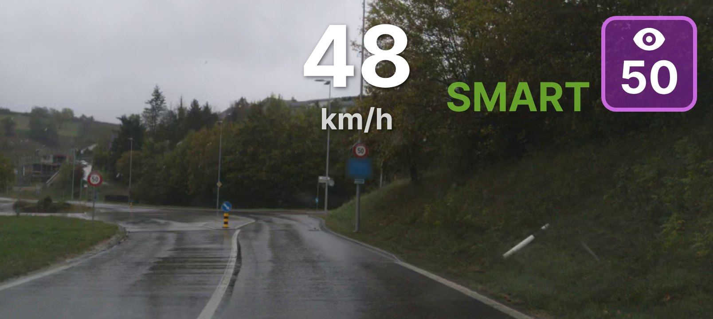
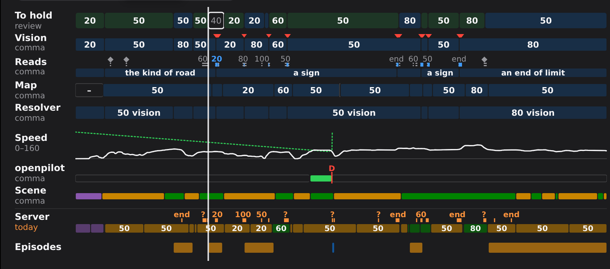
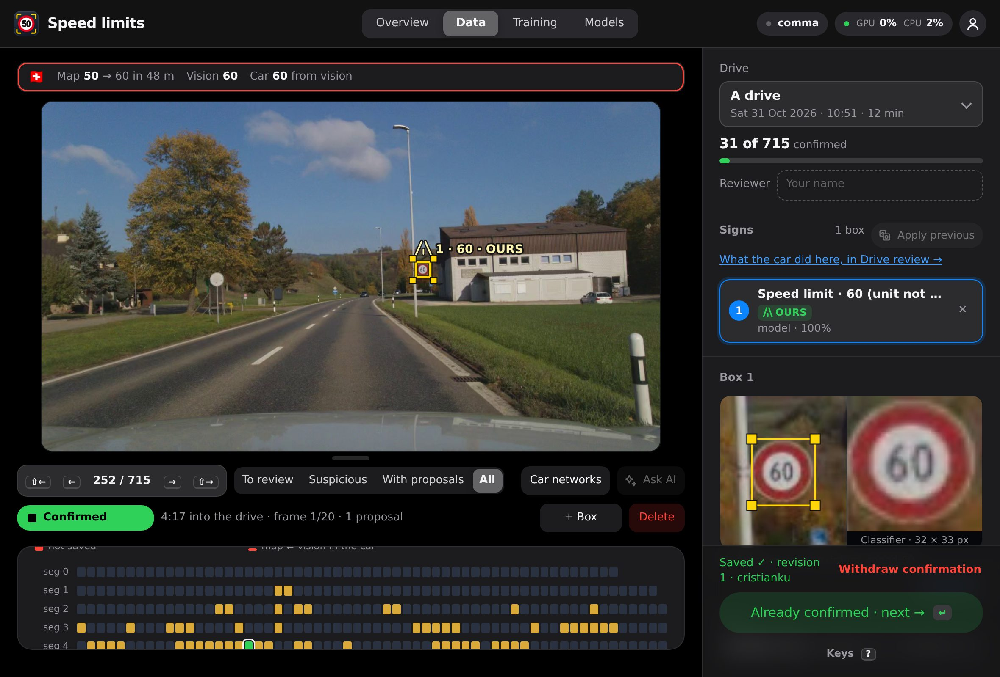
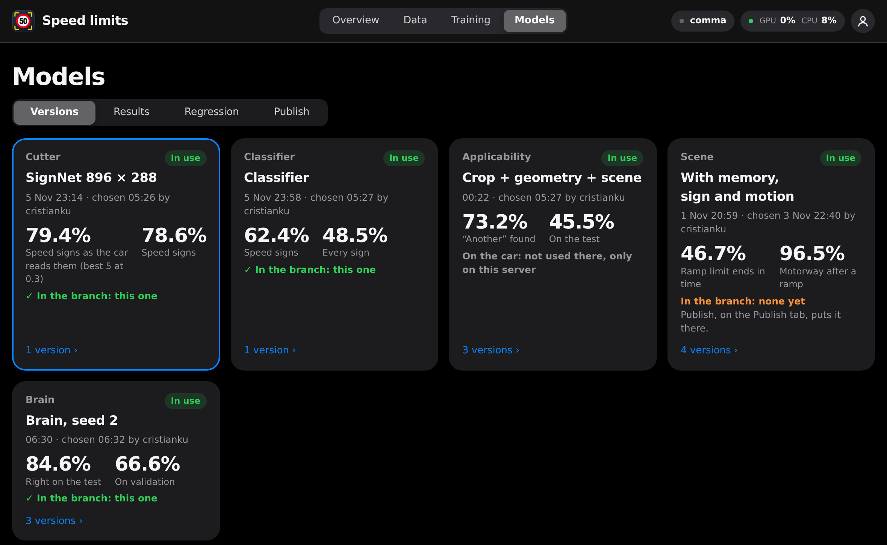

A limit with no end sign
Motorway roadworks often have none, and one missed end sign once held me at 80 for a whole stretch of motorway.
Built into sunnypilot, the openpilot fork, for the comma 4
You press cruise and the car picks its own speed.
Two small networks read the signs. A third one, with memory, takes what they read, the road and what the car is doing, and says the speed to hold once a second. It's a research build that runs on my own comma 4, in a Peugeot 3008.

Mock-up, not a photo of the comma: the screen's widgets drawn at their real size over a real frame.
Why
sunnypilot's Speed Limit Assist takes the limit from the car or from the map. Many cars send none, so it often comes down to the map, and a map misses a lot: temporary and variable limits, limits nobody has mapped, roadworks. Without a good GPS fix it doesn't even know which road you're on. That's why I started reading the signs with the road camera.
A camera alone wasn't enough either. Signs get hidden or are meant for the exit, and on some roads no sign tells you the speed at all. These are the cases the brain has to learn, and it isn't there yet.
Motorway roadworks often have none, and one missed end sign once held me at 80 for a whole stretch of motorway.
The limit posted on the ramp stops counting on the acceleration lane, and nothing tells you so.
The limit of the road outside doesn't apply in there, and usually no sign gives you another one.
The brain
It's a frozen MobileNetV3-small with a GRU on top. Once a second it gets a 256×144 picture of the road, the number the sign reader confirmed, the car ahead, gas, brake, speed, the local hour and the country. It never reads the map, and what it says goes out unchanged as the vision limit.
It's a separate network. openpilot's model still does the driving.
How it learns
The comma records the video and the car's logs.
In Speed review I go back through the drive and mark the speed each stretch allows, and where roadworks start and end. How fast I actually drove doesn't count.
The network goes through each drive in order, and my marks are the answers. Each epoch half of the sign passages get number and answer swapped (50 and 60, 100 and 120), otherwise it learns the road and ignores the sign.
Publish in the portal exports the networks to ONNX and rebuilds the branch. On the comma I check for updates and install.
In sunnylink
Off, Information, Warning and Assist work as before, each with its Speed Limit Source. In Smartspeed cruise only turns it on and off, + and - do nothing, and the car drives to what the brain says, even above the set speed. Curves still slow it down.
The brain always gives a number, so while it runs the map isn't used. If it doesn't load, sunnypilot's resolver falls back to the map.
The portal
Video and rlog play in sync, with vision, map, resolver and openpilot state on one timeline, and it finds disengagements and vision/map mismatches by itself. Labelling, training and publishing all start from there. There's also a regression tab to compare models on certified drives, but I haven't certified any drive yet.



The networks
brain_inputs.py, and the car refuses a brain trained with an incompatible version.Where it stands
These numbers are offline. On frames with a sign in force, simply copying the sign still does better: 90.8 % against 88.2 % on test, 93.1 % against 76.6 % on validation. On the training drives it gets 99.9 %, so for now it knows the roads it has seen far better than new ones. What's missing is more drives and more labelled roadworks.
On the road there's little so far. A first brain went on the car on 5 November and ran on one 15-minute drive. The brain these numbers come from was published on 6 November and has no drive in the portal yet.
I need help confirming the speed signs. If you'd like to join, this opens a mail to me and I'll set up an account for you.
Sign up